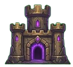
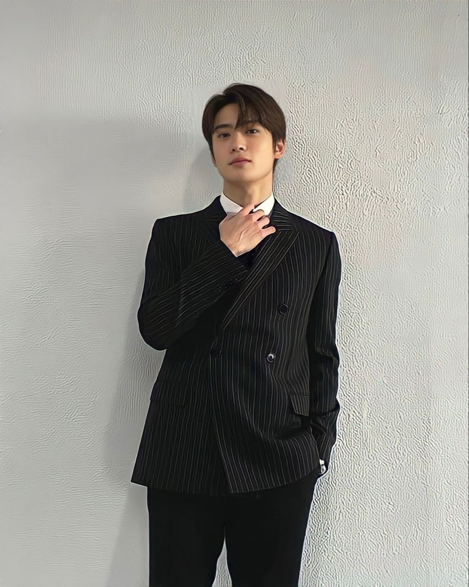
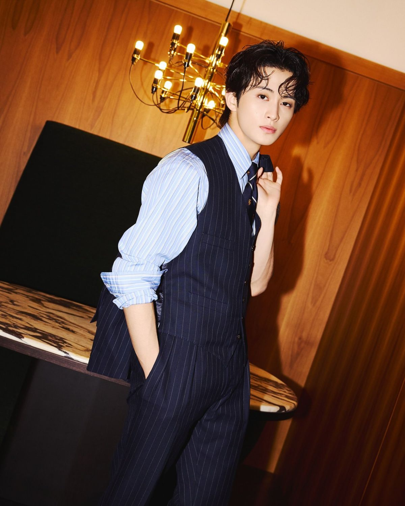

About Clash of BaNG
Our journey from a small forum to Indonesia's premier fantasy gaming community
In 2018, three passionate gamers came together with a shared vision: to create a space where fantasy gaming enthusiasts could connect, learn, and grow together. What began as a modest online forum with just 50 members in Jakarta has blossomed into a thriving community of over 10,000 active players across Indonesia and beyond.
Clash of BaNG was born from our founders' deep appreciation for strategic gameplay and the rich lore of clash style fantasy worlds. We quickly distinguished ourselves by focusing on comprehensive guides, in depth troop analysis, and high quality fan created content. Our specialty? The mysterious and powerful Dark Troops chosen by our founders as the ultimate force in fantasy warfare.
Today, we operate three regional hubs in Jakarta, Bandung, and Sanur, each serving as a local gathering point for community members. Our website serves as the central hub for all our guides, strategies, events, and community activities, bringing players together from across the globe.
Regional Hubs

Jakarta Hub
Our original headquarters and largest community center. Home to monthly tournaments and strategy workshops.
Bandung Hub
Known for its creative community and fan art contributions. Regular content creation meetups.
Sanur Hub
Our newest hub with a focus on beginner-friendly tutorials and newcomer welcome events.
Our Journey
Community Founded
Started as a small online forum with 50 passionate members in Jakarta.
First regional Hub
Opened our second community hub in Bandung with 500+ members.
The Glitch Blade Troops Focus
Launched specialized guides and strategies for Dark Troops, becoming our signature content.
1000 Members Milestone
Reached over 1000 active community members across Indonesia.
Sanur Hub Opened
Expanded to Sanur, establishing our third regional community center.
International Recognition
Featured in major gaming publications as a leading fan community.
Community Events
Launched monthly clan war tournaments with prizes and exclusive content.
Official Website Launch
Launching our brand new website to serve our 5000+ members worldwide.
Meet the Founders
Lee jeno
Founder & Strategy Lead
Expert in Dark Troops strategies with 10+ years of gaming experience.

Jung Jaehyun
Co-Founder & Community Manager
Passionate about building inclusive gaming communities and content creator.

Mark Lee
Co-Founder & Content Director
Specialized in tutorial creation and beginner-friendly guides.
Our Values
Inclusive Community
We welcome players of all skill levels and backgrounds.
Quality Content
We prioritize accurate, helpful guides and strategies.
Active Engagement
We foster regular interaction through events and discussions.
Continuous Growth
We're always expanding our content and community reach.